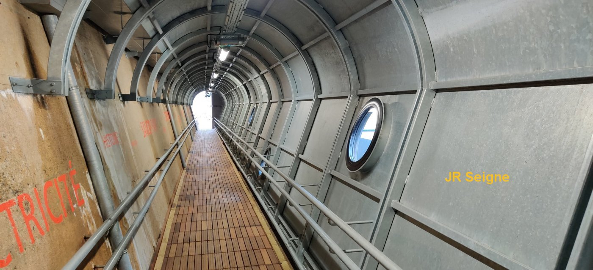
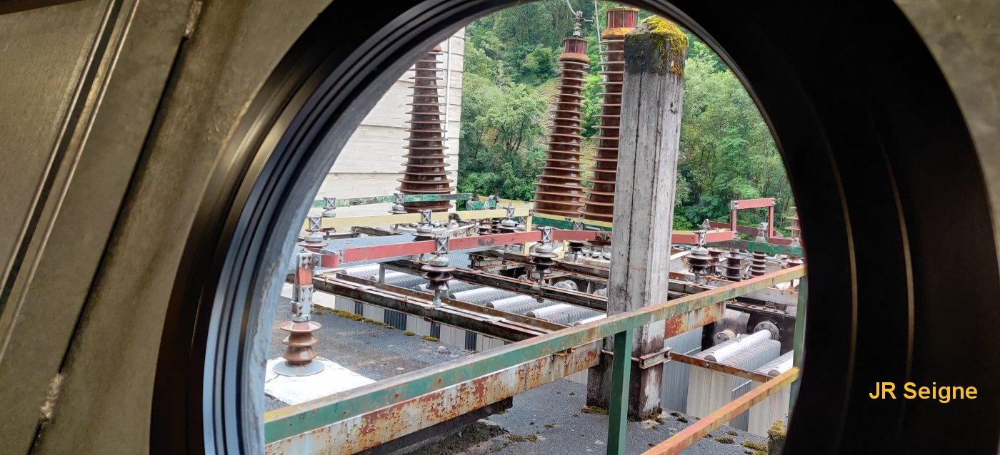
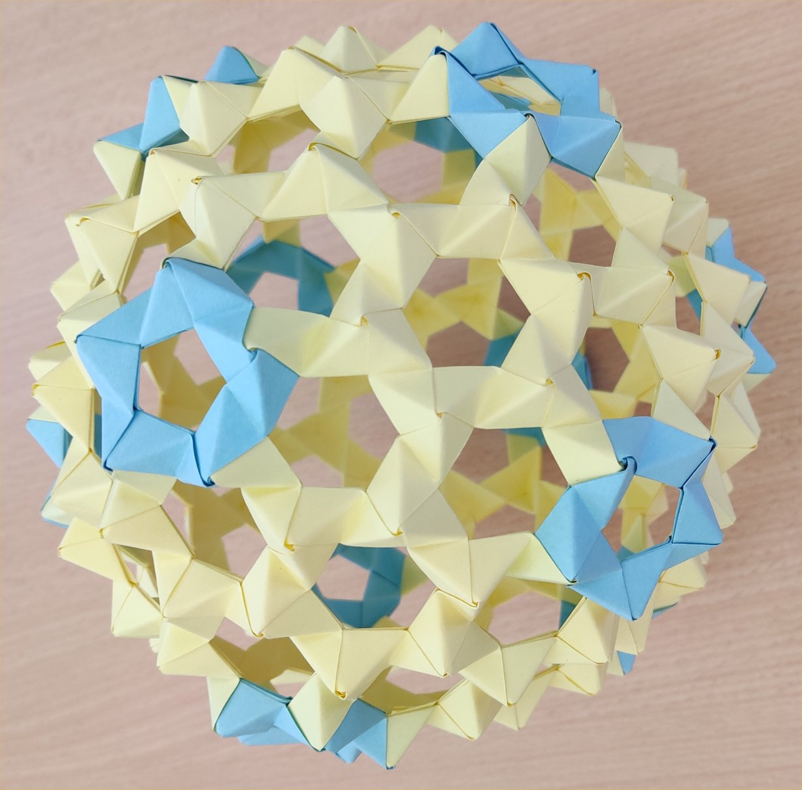
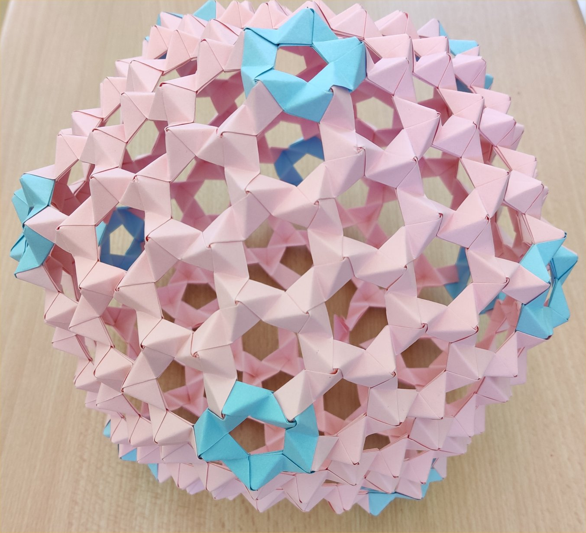
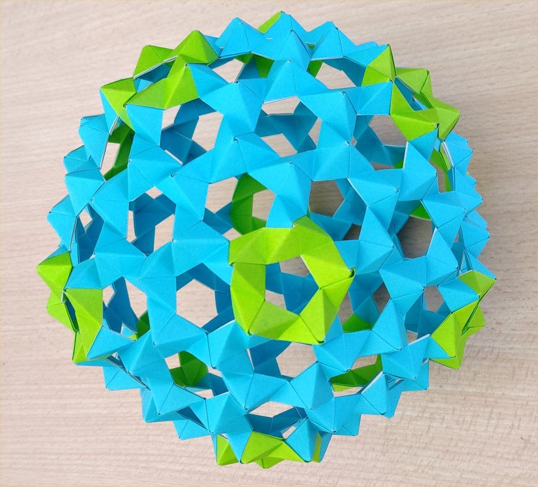

phpMyVisites | Open source web analytics

Sciences Physiques en MP*, Lycée Clemenceau Nantes |
| Série 1 |
Série 2 |
Série 3 |
Série 4 |
| Réponses série 1 |
Réponses série 2 |
Réponses série 3 |
Réponses série 4 |
|  |
Sur
la photographie de gauche, on peut voir un tunnel en cage de Faraday
qui jouxte la sortie des lignes Haute Tension de 225 000 V issue du
transformateur de la centrale hydroélectrique de Couesque (12). Sur la
photographie de droite à travers le hublot, on voit le départ des
lignes et les piles d'isolants. Le champ électromagnétique ne pénètre
presque pas les conducteurs (effet de peau), ainsi une paroi métallique
isole des champs électriques et magnétiques. C'est le principe de la
cage de Faraday |
 |
| Dans
le cadre de son TIPE 2022, Luc D. a réalisé toute une série d'origamis
dont voici 3 exemplaires. En dehors de leurs indéniables qualités
esthétiques, ces structures sont intéressantes car analogues à celles
de nombreux virus. L'objectif était, une fois contruits, de tester leur
résistance mécanique afin de préciser les endroits les plus fragiles.
Cela pouvant s'avérer utile dans le cadre de la destruction des virus. |
 |  |  |
| Cours | Diaporamas | TD | Devoirs | TP | Etudiants MP | Etudes documentaires |
Anciens | Accueil |